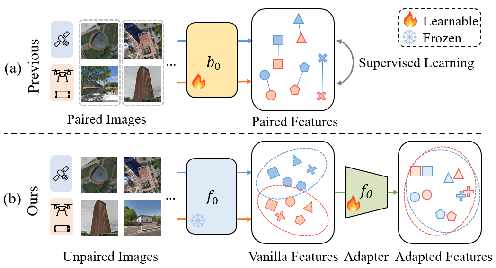

Learning Cross-view Visual Geo-localization without Ground Truth
Haoyuan Li,
Chang Xu,
Wen Yang,
Huai Yu,
Gui-Song Xia,
EIS SPL, Wuhan University, Wuhan, China
LIESMARS, Wuhan University, Wuhan, China
[Paper]
[Code]
Abstract
Cross-View Geo-Localization (CVGL) involves determining the geographical location of a query image by matching it with a corresponding GPS-tagged reference image. Current state-of-the-art methods predominantly rely on training models with labeled paired images, incurring substantial annotation costs and training burdens. In this study, we investigate the adaptation of frozen models for CVGL without requiring ground truth pair labels. We observe that training on unlabeled cross-view images presents significant challenges, including establishing relationships within unlabeled data and reconciling view discrepancies between uncertain queries and references. To address these challenges, we propose a self-supervised learning framework to train a learnable adapter for a frozen Foundation Model (FM). This adapter is designed to map feature distributions from diverse views into a uniform space using unlabeled data exclusively. To establish relationships within unlabeled data, we introduce an Expectation-Maximization-based Pseudo-labeling module, which iteratively estimates matching between cross-view features and optimizes the adapter. To maintain the robustness of the FM's representation, we incorporate an information consistency module with a reconstruction loss, ensuring that adapted features retain strong discriminative ability across views. Experimental results demonstrate that our proposed method achieves significant improvements over vanilla FMs and competitive accuracy compared to supervised methods while necessitating fewer training parameters and relying solely on unlabeled data. Evaluation of our adaptation for task-specific models further highlights its broad applicability.
Introduction
CROSS-VIEW Geo-Localization (CVGL) aims at determining the image-level geo-location of a query image by retrieving its corresponding geo-tagged overhead reference image. Benefitting application scenarios like navigation, urban planning, and building localization, cross-view geo-localization is mainly addressed with a fully supervised paradigm in the existing literatures. To obtain satisfactory CVGL performance within different regions, the current fully supervised paradigm relies on the region-specific paired images to train specific models. While models tend to yield poor transferability in regions without corresponding paired image supervision. Thus, this approach poses significant annotation and training burdens, hindering the real-world deployment of CVGL systems.
While FMs have been well-adapted for specialized tasks such as classification and segmentation tasks, existing approaches either rely on labeled data for training adapters or are limited to single-domain target tasks. In contrast, CVGL involves the adaptation to two distinct target domains, which presents a unique challenge. Addressing this challenge requires not only learning suitable feature representations but also bridging the domain gap inherent in the cross-view scenario itself. Considering the absence of pair labels for images, the two following challenges need to be addressed when adapting the foundation model to the CVGL.
1) Mining relationships from unlabeled data.In previous works, matched image pairs are identified using annotation labels, and models are trained with the ground truth's supervision. However, in the absence of ground truth relationships, the challenge lies in identifying the potential positive targets from unlabeled data, which becomes even more difficult when images exhibit cross-view variance.
2) Preserving Robustness of Frozen Models.
Adaptation can help the frozen models to better suit new scenarios. However, the significant view discrepancy and lack of ground truth may cause the model to overfit the training data, harming the original feature representation's robustness. Effectively adapting the frozen model for the new cross-view tasks while preserving the original feature representation's robustness poses a significant challenge.

Comparison of the previous supervised
paradigm (a) and the proposed self-supervised paradigm (b).

Performance degradation of the foundation model due to the view gap.
|
|
We introduce a self-supervised adaptation pipeline tailored for cross-view geo-localization, aiming to bridge the gap between diverse view perspectives. Initially, we leverage a frozen foundation model to extract initial features from cross-view images, each exhibiting distinct distributions. Subsequently, we propose an adapter to harmonize these initial features into a uniform representation. To optimize the adapter, we devise an Expectation Maximization learning pipeline, extracting potential positive samples from unlabeled data. Furthermore, to maintain the robustness of the foundation model, we introduce an Adaptation Information Consistency (AIC) module, ensuring consistency between initial and adapted features. Extensive experiments validate the efficacy of our pipeline in adapting the founda- tion model for Drone-to-satellite geo-localization, achieving performance on par with supervised methods.
Our contributions are three-folds:
- We propose a self-supervised adaptation pipeline for cross-view geo-localization without ground truth, leveraging a frozen foundation model to extract initial features and an adapter to unify them into a consistent representation.
- We introduce an EM-based Pseudo-Labeling (EMPL) module to estimate positive samples from unlabeled data and optimize the adapter, alongside an Adaptation Information Consistency (AIC) module to ensure feature consistency.
- We validate the effectiveness of our approach through comprehensive experiments, showcasing its capability to adapt the foundation model for Drone-to-satellite geolocalization while achieving comparable performance to supervised methods. Furthermore, our method can enhance the performance of task-specific pre-trained models on new datasets across cities, even in the more demanding Ground-to-satellite geo-localization scenario.
|
Pipeline
|
The Self-Supervised Adaptation for Cross-view Geo-localization
|

Overview of the self-supervised cross-view adaptation. In the training phase, the foundation model is frozen and the adapter is trained via the proposed EMPL and AIC modules without ground truth. In the inference phase, the global features of input images are extracted by the frozen foundation modal and the trained adapter for retrieval to final geo-localization.
|
Experimental Results
|
A Comparison of Different Methods on University-1652 Dataset
|

Drone-to-satellite retrieval results on the University-1652 Dataset. The query drone images are listed on the left, and the yellow boxes indicate the true matched images.
|
Acknowledgements
We would like to thank the anonymous reviewers for their valuable comments and contributions. The numerical calculations in this article have been done on the supercomputing system in the Supercomputing Center, Wuhan University.
|